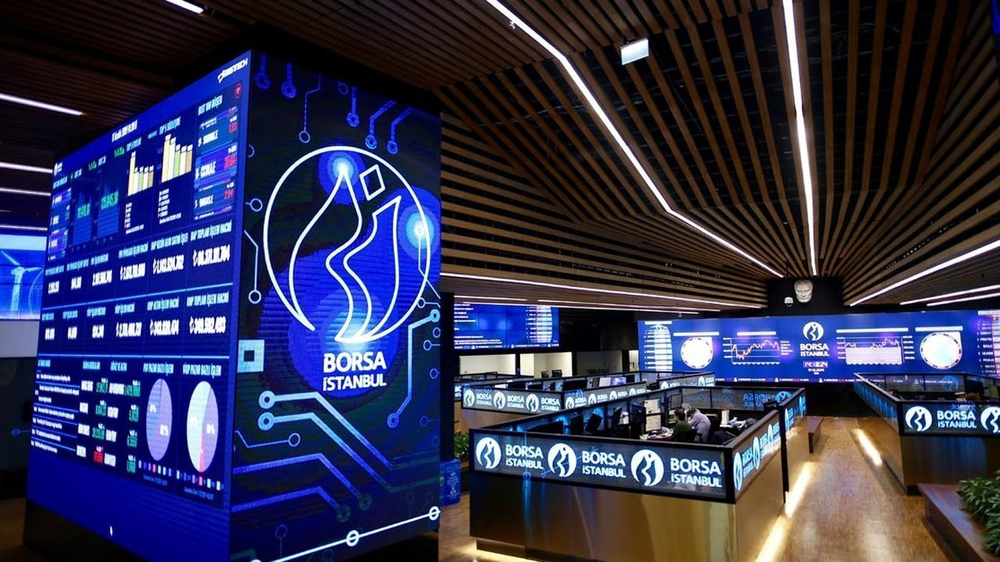
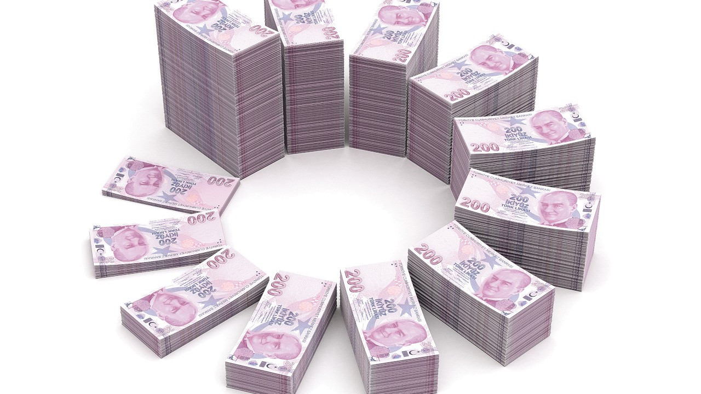

TRT
İtalya ECB’nin faiz artırımlarından endişe duyuyor
İtalya Ekonomi Bakanı Giancarlo Giorgetti, Avrupa Merkez Bankası’nın (ECB) faiz oranlarını ard arda artırma ihtimalinin İtalya gibi yüksek borçlu ülkeler için endişe verici olduğunu söyledi.
Bakan, Roma’da düzenlenen bir etkinlikte yaptığı konuşmada, “Ülke olarak birkaç yıldır sıfıra yakın veya sıfırın altındaki faiz oranlarıyla elverişli bir durumdan faydalandık ve bu şimdi değişiyor” dedi.
Borsa’da dolar bazında %100'den fazla getiri!
Küresel pay piyasalarından pozitif ayrışan BIST 100 endeksi yıl başından bu yana yatırımcısına yaklaşık yüzde 190 getiri sağlayarak 5.382 puanla rekor seviyeye çıkarken, dolar bazlı bakıldığında da yüzde 100'ün üzerinde kazançla tarihi bir performans sergiledi.

Dolar bazlı BIST 100 endeksi, Nisan 2018'den bu yana en yüksek seviyesini gördü ve dün 288 puana kadar çıktı. Vakıf Yatırım Direktörü Altan Aydın, “Yılı bitirirken son çeyrek bilançolarının da fiyatlanabileceğini düşünüyoruz” dedi.
Tera Yatırım Başekonomisti Enver Erkan da "Mevcut ekonomik kurallarda risksiz getiri olan faiz düşük kalıp döviz de hareket etmediği sürece bu durum devam edebilir” diye konuştu.
Bütçede son yılların en iyi performansı
Vergi tahsilatında Kasım aylarına göre kaydedilen yüzde 109,6 ve on bir aylık dönemlere göre yüzde 103,3’lük artışlar toplam bütçe gelirlerini büyüttü. Ocak-Kasım döneminde toplam bütçe harcamaları geçen yıla göre yüzde 94,7 artarken, bütçe gelirlerindeki artış yüzde 100’ü aştı.

Merkezi yönetim bütçesi, bu yılın ilk on bir ayında özellikle vergi gelirleri cephesinde kaydedilen rekor gelir artışının etkisiyle son yılların en iyi performansını ortaya koydu.
Bu yılın tümünde 278,4 milyar lira tahmin edilen bütçe açığı, Kasım ayında elde edilen 108,3 milyar liralık bütçe fazlası ile Ocak-Kasım dönemi itibariyle 20,4 milyar liraya geriledi ve aynı dönemde 272,2 milyar liralık faiz dışı fazla oluştu.
Vergi tahsilatında Kasım aylarına göre kaydedilen yüzde 109,6 ve on bir aylık dönemlere göre yüzde 103,3’lük artışlar toplam bütçe gelirlerini büyüttü.
Gelir ve kurumlar vergisi ile dolaylı vergilerden dahilde KDV ve BSMV gibi alanlarda yılın tümü için öngörülen hedefler, Kasım sonu itibariyle aşıldı.
Merkezi yönetim bütçesi, bu yılın ilk on bir ayında özellikle vergi gelirleri cephesinde kaydedilen rekor gelir artışının etkisiyle son yılların en iyi performansını ortaya koydu.
Temmuz ayında Resmî Gazete’de yayımlanan ek bütçe yasası ile bu yılın tümünde bütçe gelirlerinin 2 trilyon 553,1 milyar, bütçe harcamalarının 2 trilyon 831,5 milyar, bütçe açığının 278,4 milyar ve faiz dışı bütçe fazlasının 51,4 milyar lira olacağı öngörülmüştü. Ocak-Kasım dönemi itibariyle bütçe gelirleri geçen yılın eş dönemine göre yüzde 100,2 artışla 2 trilyon 547,2 milyar lira ile yıllık hedefi yakaladı. Bütçe harcamaları yüzde 94,7’lik artışla 2 trilyon 567,6 milyar lira ile yıllık hedefin yüzde 90,7’si düzeyinde kaldı.
Böylece bütçe açığı geçen yılın aynı dönemine göre yüzde 56 küçülerek 20,4 milyar liraya gerilerken, faiz dışı bütçe fazlası yüzde 117,1’lik artışla 272,2 milyar lira ile rekor bir düzeye ulaştı. Buna göre Kasım sonu itibariyle kümülatif açık, yıl sonu için öngörülen tutarın 258 milyar altında, faiz dışı fazla ise yıllık hedefin 220,8 milyar lira üzerinde bulunuyor.
Harcamalar yönüyle bakıldığında ise personel ödemeleri, cari transferler, mal ve hizmet alımları, yatırımlar gibi faiz dışı bütçe giderleri yüzde 98,3 artışla 2 trilyon 274,9 milyar lira olurken, faiz ödemelerinin yüzde 70,3 artışla 292,7 milyar lira olduğu belirlendi. Faiz dışı bütçe giderleri kapsamında “sermaye giderleri” ve “sermaye transferleri” kalemlerinde izlenen toplam kamu yatırımları, on bir ayda yüzde 98,8 artışla 209,3 milyar lira oldu.
Kasım’da 108 milyar fazla
Bu yıl bütçe dengelerinde gözlemlenen iyileşmede, Kasım ayı gerçekleşmelerinin önemli payı olduğu belirlendi. Kasım’da bütçe harcamaları geçen yılın aynı ayına göre yüzde 76,4 artışla 239,4 milyar lira olurken, bütçe gelirleri yüzde 107,3’lük artışla 347,7 milyar liraya ulaştı ve böyle aylık bazda 108,3 milyar liralık bir bütçe fazlası verildi. Kasım’daki bu bütçe fazlası kümülatif bazda Ekim sonu itibariyle (on aylık) 128,8 milyar lira olan açığı, on bir itibariyle 20,4 milyar liraya çekti. On bir ayda oluşan 272,2 milyar liralık faiz dışı fazlanın da 132,7 milyar lirası Kasım ayında elde edildi. Aylık faiz dışı fazla geçen yıla göre yüzde 180,5 daha yüksek çıktı.
Kasım ayındaki bütçe gelirlerinin 312 milyar lirasını geçen yıla göre yüzde 109,6 artan vergi tahsilatı oluşturdu. Özellikle kurumlar vergisinde yüzde 161,5, özel tüketim vergisinde (ÖTV) yüzde 156,7, şans oyunları vergisinde yüzde 126,5, banka ve sigorta muameleleri vergisinde yüzde 116, ithalde alınan KDV’de yüzde 93,7 gibi rekor artışlar kaydedildi.
Bütçe dengelerini iyileştiren başlıca faktör, vergi tahsilatında kaydedilen Kasım aylarına göre yüzde 109,6 ve on bir aylık dönemlere göre yüzde 103,3’lük artışların toplam gelirleri büyütmesi oldu.
Özellikle bankalar başta kurum karlarının tüm zamanların rekorunu kırdığı bu dönemde kurumlar vergisi tahsilatı Ocak-Kasım döneminde yüzde 185 artışla 498,7 milyar liraya ulaşarak, yılın tümü (12 ay) için öngörülen hedefin yüzde 102,2’sine ulaştı. Enflasyon muhasebesi uygulanmadığı için rekor artışlar kaydeden kurum kârları, kurumlar vergisi tahsilatını büyüterek bir çeşit ek vergi niteliğinde bütçeyi destekledi. Yılın tümünde 308,5 milyar lira olması öngörülen gelir vergisi tahsilatı da on bir ayda yüzde 60,4 artışla 314,6 milyar liraya ulaşarak, hedefi aştı. Dolaylı vergilerden dahilde alınan KDV’nin 367,3 milyar liralık tahsilatla yıllık hedefin yüzde 115,9’una ulaşması, tüketimde öngörülenin üzerinde bir hareket olduğuna işaret ediyor. İthalattaki büyüme paralelinde de ithalde alınan KDV tahsilatı da yüzde 133 artışla 522,5 milyar lira oldu. Anılan dönemde BSMV tahsilatı da yıllık hedefi aşarken, damga vergisi, harçlar ve diğer dolaylı-dolaysız vergilerde tahsilat hedefe şimdiden yaklaştı.
Merkezin patronlarının zorlu sınavı
Artan küresel fiyat baskıları daha fazla faiz artışını tetiklemekle tehdit ediyor.
Küresel arenada manşet enflasyondaki son düşüşlre rağmen çekirdek enflasyon birçok ekonomide yükselmeye devam ediyor.
Gelişmiş ekonomilerin çoğunda temel ürünlerde fiyat baskıları artışını sürdürüyor. Hal böyle olunca merkez bankalarının önümüzdeki aylarda para politikalarını sıkılaştırmaya devam etmek zorunda kalacağı belirtiliyor.
Financial Times tarafından resmi istatistikler üzerinde yapılan bir analize göre, gıda ve enerji fiyatlarındaki değişimleri içermeyen ve faiz belirleyicileri tarafından fiyat baskılarının sürekliliğinin daha iyi bir ölçüsü olarak görülen çekirdek enflasyon, dünyanın birçok yerinde hızlanıyor.
Verileri takip edilen 33 ülkenin çoğunda çekirdek enlasyon oranları kasım ayında da yükselmeye devam etti. Çoğu merkez bankası yetkililerin hedeflediği yüzde 2'lik enflasyon seviyesinin oldukça üzerinde kaldı.
Çekirdek enflasyonun yükseldiği ülkelerin oranı son aylarda azalmaya başladı. Ancak manşet enflasyondan çok daha yaygın olmaya devam ediyor. Ekim ile kasım ayları arasında ülkelerin sadece üçte birinde manşet enflasyon oranları yükseliş kaydetti.
“Enflasyon can yakmaya devam edecek”
Uluslararası Varlık Yöneticisi Hargreaves Lansdown'da kıdemli yatırım analisti olan Susannah Streeter, "Önümüzde hala çok fazla acı çekme potansiyeli var. İnatçı yüksek fiyatlar ekonomiler için ciddi baş ağrılarına neden olmaya devam ediyor."
Fiyat baskısının arttığının bir başka ölçüsü olan hizmet enflasyonu, İngiltere, Euro Bölgesi ve ABD dahil olmak üzere birçok gelişmiş ekonomide onlarca yılın en yüksek seviyelerine yakın seyretmeye devam ediyor.
Politika yapıcılar, enflasyonun manşet ölçütlerindeki artışa yanıt olarak bu yıl faiz oranlarını agresif bir şekilde arttırdı. Ancak faiz artış hızında son günlerde kısmen vites küçültmeye tanık olunuyor.
Geçtiğimiz hafta ABD Merkez Bankası, Avrupa Merkez Bankası ve İngiltere Merkez Bankası, birçok ülkede manşet enflasyonun belirgin bir şekilde zirveye ulaşmasına tepki olarak, enflasyonla mücadele stratejilerini 0,75 puanlık faiz artışlarından yarım puana indirmeyi tercih etti.
Capital Economics'in baş küresel ekonomisti Jennifer McKeown, "Gelişmiş piyasalardaki merkez bankalarının yapması gereken daha çok iş var. Enflasyon zirveye ulaşmış olabilir. Fakat bu noktadan aşağıya doğru düzgün bir yol olduğu anlamına gelmiyor."